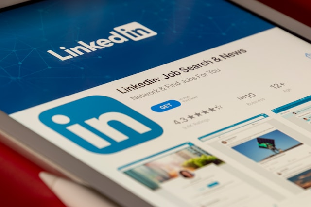

Linkedin is half-way a scam
LinkedIn, despite its professional facade, is rife with issues. The platform is a prime target for scammers, with a high volume of fake profiles and phishing attempts that prey on job seekers and professionals. Beyond the security risks, the relentless feed of "thought leadership" and humblebrags can make the platform feel disingenuous. The focus often shifts from genuine connection to a performance of professional success, undermining its core purpose of authentic networking. Similarly, cold email culture, while not entirely obsolete, has become an archaic and often ineffective method. Inboxes are oversaturated, and generic, automated pitches are instantly recognized as spam. The average response rate for cold emails is notoriously low, often in the single digits, and bulk-sending risks damaging one's reputation. In my experience, I would not even consider it a non-zero chance; its just zero. To stand out, messages require immense personalization and a targeted approach, which is time-consuming. In an age where digital communication is more about building trust and value, a cold email often does the opposite, alienating potential contacts before a conversation can even begin. In short, cold email is dead.